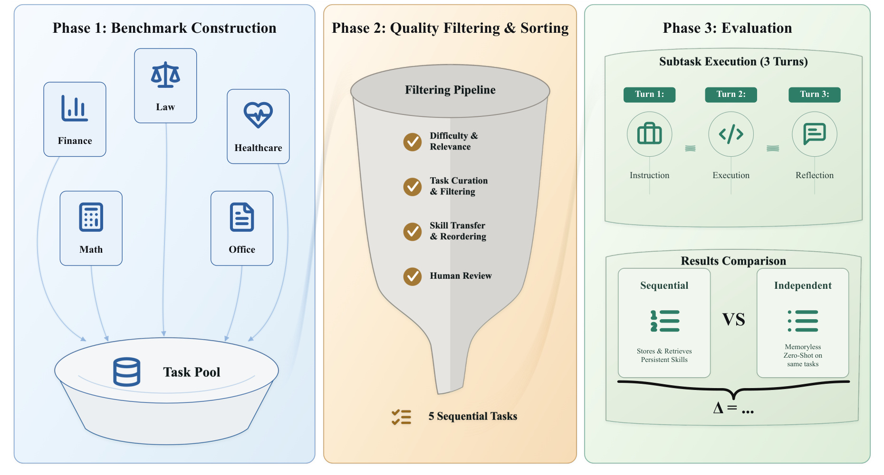
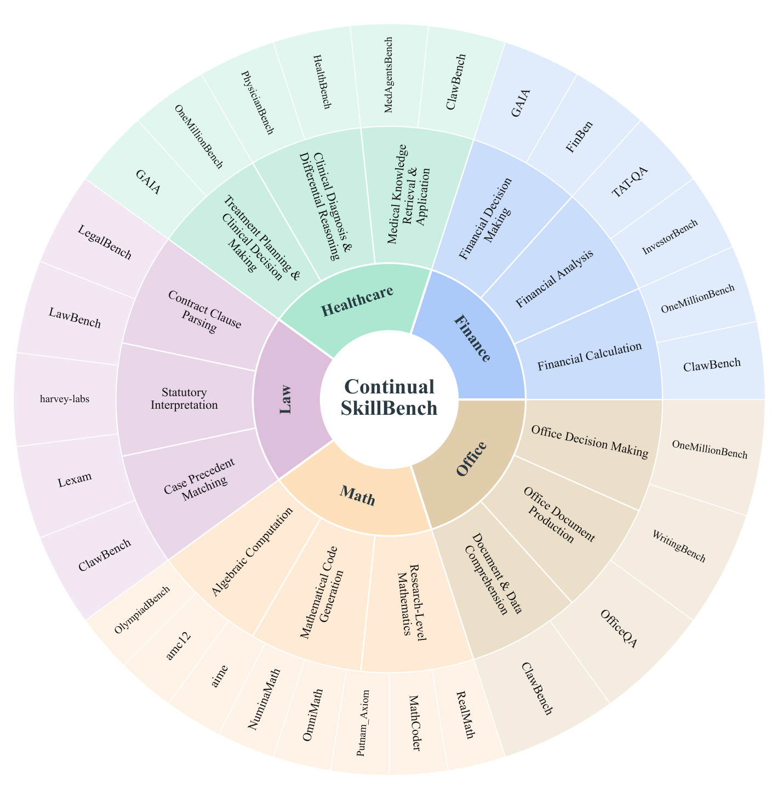
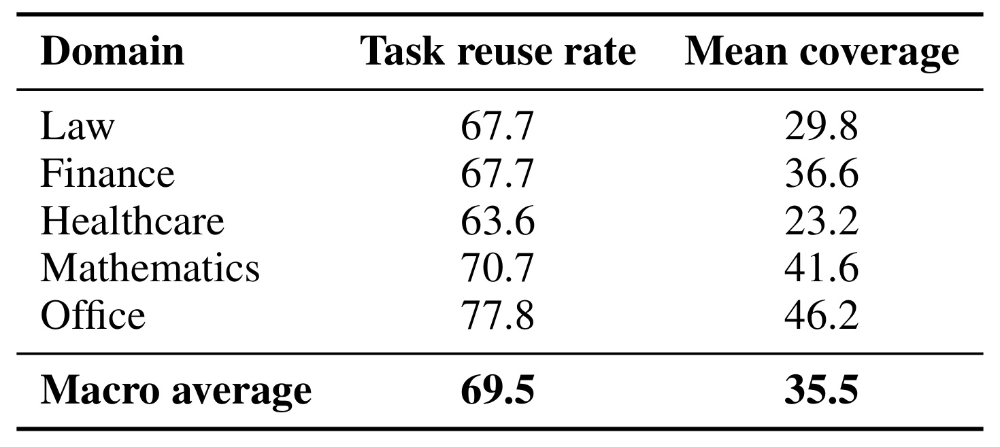
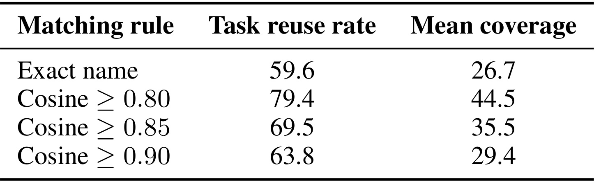
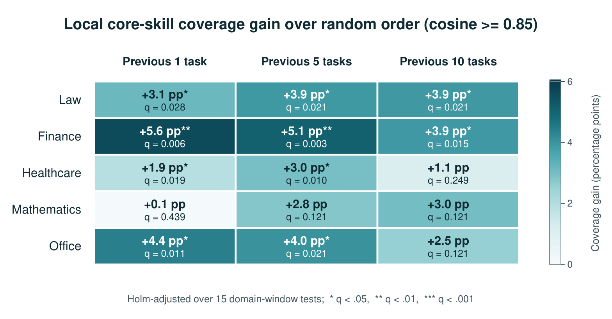
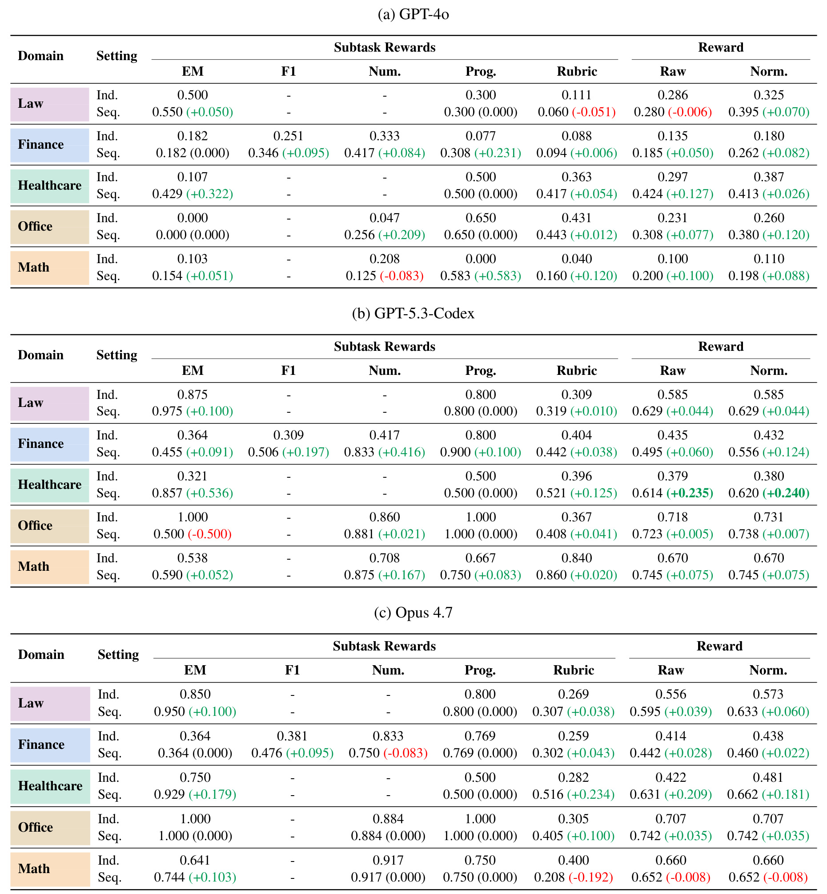
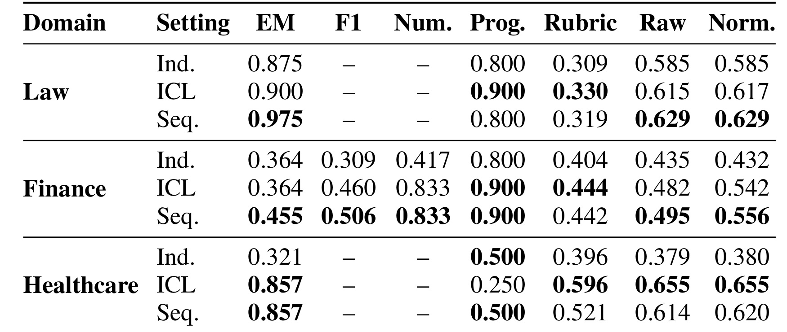
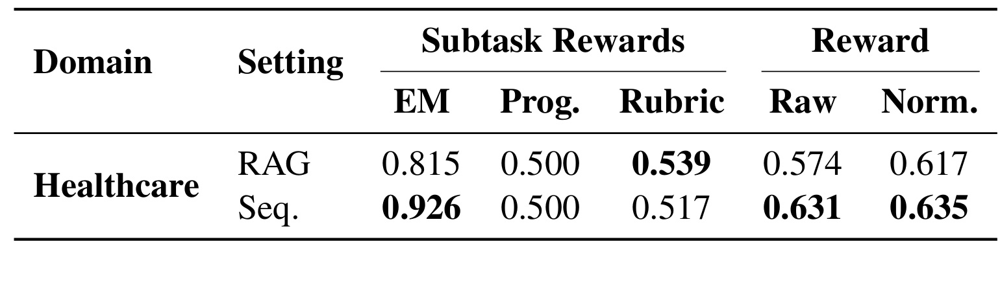
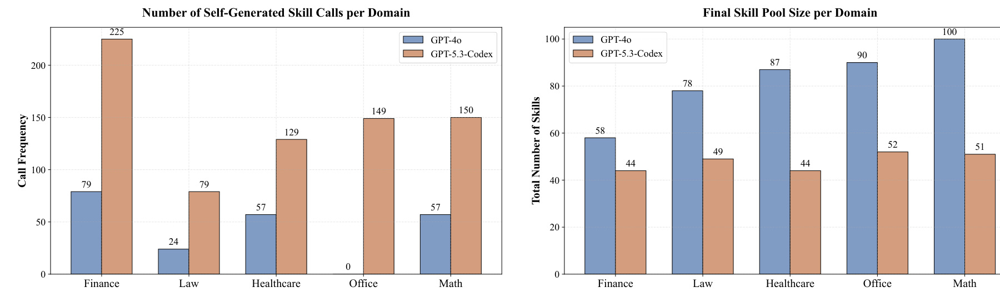
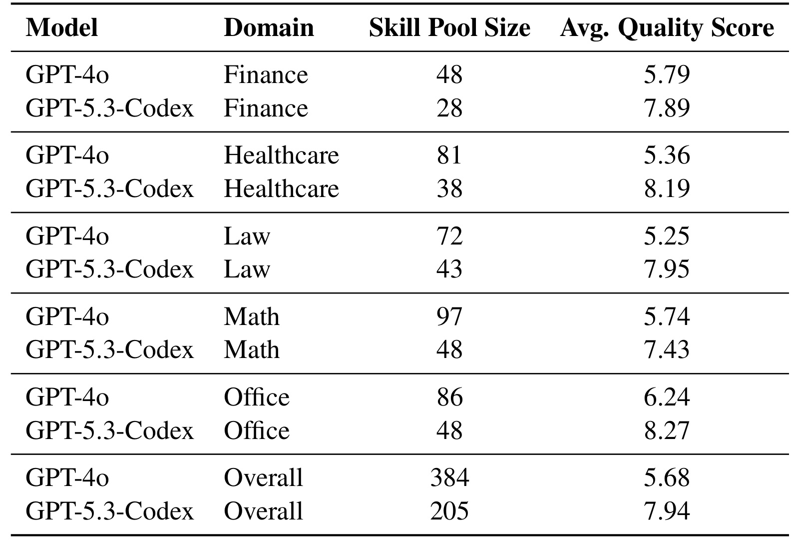

ContinualSkillBench：LLM Agent 真的能持续进化技能吗？
这篇论文由北京大学人工智能研究院的 Tianyi Guan 等人完成，并与北京通用人工智能研究院合作。它不再把“技能”当作一份由人预先写好的静态说明书，而是追问一个更难、也更接近真实 Agent 使用的问题：模型连续完成任务、看到反馈并维护技能库之后，能力是否真的发生了可复用的扩展？论文入口为 arXiv:2608.03874。论文首页给出的官方代码仓库已核验可定位；本文的数字、表格和结论边界均以论文 PDF 为准。
现有 Agent 在连续任务中表现变好，并不自动意味着它学会了可迁移技能：提升可能只是因为历史示例与评测反馈仍留在上下文中。真正缺少的是一种能把上下文适应、显式技能维护与从零独立执行拆开的评测。
1. 背景和问题
现代 Agent 框架常把技能写成结构化文档：文档说明何时触发、如何执行、有哪些检查项，模型在任务前读取它，再配合工具完成工作。这种设计确实能弥补预训练知识与具体环境流程之间的差距；但已有“有技能”和“无技能”对照通常使用人类专家预先整理的技能文件，回答的是“高质量说明书有没有用”，而不是“Agent 能否从自己的连续经验中抽象出高质量说明书”。后一个问题包含至少三个环节：发现反馈中可复用的规律、把规律压缩为边界清晰的技能、在后来不同但相关的任务中正确检索并调用。只要任何一环失败，技能库就可能增长，却不带来能力扩展。
论文抓住了一个很容易被实验设计遮蔽的混淆变量。顺序执行任务时，Agent 通常同时拥有此前对话、此前任务产物、评测反馈和外部技能文件；独立执行时，这些信息全部被重置。因此，“Sequential 胜过 Independent”只能说明保留历史总体有用，不能把增益归因给显式技能。更长的上下文本身就能让模型模仿先前答案格式、记住评测偏好、沿用某种推理套路，甚至直接找到相似问题的解法。若没有纯上下文学习条件，研究者很容易把短期上下文适应误称为持久技能进化。
第二个困难是任务流本身必须给技能迁移留下机会。随机拼接一百道互不相关的题，即使 Agent 从不复用技能也不足为奇；把几乎相同的题重复一百遍，又会把记忆答案伪装成抽象能力。ContinualSkillBench 因而选择 Healthcare、Law、Mathematics、Finance、Office 五个广域领域，每个领域构造一条 100 个子任务的序列，共 500 个任务。序列从较基础的知识处理或计算，逐步走向多步推理、工具使用和开放式决策，并让后续任务可能重用前面练过的核心操作。这样的设计把“迁移机会存在吗”和“Agent 利用了机会吗”拆成两个问题：前者由结构审计回答，后者由顺序实验回答。
这也使它区别于三类相邻工作。静态技能基准比较外部专家技能是否有效，却不观察技能库如何增长；同任务多实例的技能学习基准容易把同分布模板复用当成广义迁移；一般持续上下文基准虽然研究在线记忆，却未必要求经验被压缩成可加载、可修改的结构化技能。ContinualSkillBench 把长而异质的领域任务流、显式技能文件和独立/上下文对照放进同一评测，使“完成当前任务”“适应当前会话”和“形成可跨任务复用的程序性知识”不再被视作同一件事。
第三个困难是输出与评测高度异质。法律与医疗任务可能需要开放式解释，金融任务同时包含表格抽取和数值计算，Office 任务可能要求真实文件或环境状态，数学任务既有短答案也有代码执行。论文没有强行用一个分数函数覆盖所有任务，而是使用 Exact Match、token-level F1、Numeric、Rubric Judge 与 Programmatic evaluator，再聚合为 raw reward 和 normalized reward。这样可以看到增益来自哪类输出要求，也可以识别“总体变好、某个严格指标却退化”的情况。
最后，论文把技能库自身也当成研究对象，而不只观察最终分数。一个弱模型可能为每个失败单独生成一份狭窄技能，导致技能数量很多、复用很少、检索负担越来越重；强模型则可能把多次经验合并为较少但更通用的流程。技能数量、技能调用次数、技能内容质量与任务收益是四个不同变量。ContinualSkillBench 的价值正是同时量这些变量，并用纯 ICL、RAG 与独立执行对照，迫使“Agent 自我进化”从宣传性说法变成可以被证伪的实验命题。
2. 方法
2.1 从三万候选任务到五条连续技能轨迹
基准构造从约 30,000 个原始任务开始，来源横跨基础问答、专业评测、开放式 Agent 任务与复杂人评任务。处理链分三阶段：先做领域相关性、难度与所需技能标注；再判断任务之间可能的技能迁移方向，并在难度约束下排序；最后由人工复核任务质量、难度递进和迁移关系是否可信。关键不是把同领域题目排在一起，而是构造“先练基础操作、后把它作为子程序复用”的轨迹。 例如 Finance 从表格定位和期间匹配，走向增长率、比率解释，再到需要数据加载、公式应用和验证的 WACC 工作流。

Figure 1 把输入、构造与评测连成一条完整链。左侧的五领域任务先汇入任务池；中间漏斗依次执行难度与相关性检查、任务筛选、技能迁移与重排、人工复核；右侧每个子任务又分为 Instruction、Execution、Reflection 三轮。图的最下方才是核心对照：Sequential 保留并检索持久技能，Independent 对同一批任务无记忆地从零执行，二者差值记为增益。这里要注意，右侧对照并未单独隔离技能文件，因为 Sequential 也保留上下文；这正是后续 ICL 消融存在的原因。图中“5 Sequential Tasks”应结合正文理解为五条领域序列，而不是总共只有五个任务；每条序列实际包含 100 个子任务。
五个领域内部各有三条由浅入深的能力轨。Healthcare 从医学知识检索与应用，过渡到临床诊断与鉴别推理，再到治疗规划；Law 从合同条款解析到成文法解释和判例匹配；Math 从代数计算到数学代码生成和研究级数学；Finance 从金融计算到分析和决策；Office 从文档与数据理解到文档生产和办公决策。源数据既含跨域的 GAIA、ClawBench、OneMillionBench，也含 LawBench、TAT-QA、OlympiadBench、OfficeQA 等领域基准。

Figure 2 的三层同心结构说明“同领域”并不等于“同一种任务”。内圈是五个领域，中圈是每个领域的三类宏观能力，外圈是具体来源。它对结果解释很重要：后续任务并非简单复刻一个模板，而可能改变数据来源、输出形式和工具要求，只保留部分底层能力相通。因此，若 Agent 能把“表格定位—单位归一—公式应用—结果校验”这样的链条迁移到后续任务，比记住某道题的答案更接近论文所说的技能。不过，所有来源仍是固定基准，这种异质性还没有达到真实用户流量的开放世界程度。
对过滤后的每个领域 100 个任务，作者抽取 200 个无序任务对，再分别判断 A→B 与 B→A 是否存在技能帮助，因此每个领域得到 400 个方向判断。GPT-5.4 将每个方向标成 YES、PARTIAL 或 NO；只有 YES 形成有向边。任务先按难度层分组，逆着课程难度的边被删除；同一难度层内使用 Kahn 拓扑排序的贪心变体，优先选择剩余入度为零且出度最大的任务。若图中出现环，则选择出度最大的节点打破环。最后拼接各难度层，并由人工检查。这个过程输出的是固定评测顺序，不涉及被测模型参数训练。
2.2 用结构审计验证“确实存在可复用机会”
排序算法包含 LLM 判断，作者没有直接把排序器的判断当作证据，而是另做一次与序列位置隔离的事后审计。Qwen3-32B 在温度 0、随机种子 42、关闭 thinking mode 的条件下，独立读取每个任务的指令、工作区文件元数据以及最多五项评测要求；它看不到序列位置、来源基准、参考答案和其他任务的标签。每个任务得到 1—8 个技能，技能类型可为 knowledge、reasoning、tool、workflow 或 output，并分为 core 与 support。接口性要求，如 JSON 包装、指定文件名或选择题格式，被规则化删除，避免把相同输出壳误判为可迁移能力。因为自由生成的技能名称可能不同，论文把规范化名称与至多两条任务无关描述拼接，经 sentence-transformers/all-mpnet-base-v2 编码，再以余弦相似度判断语义对应。核心匹配规则是：
符号解释：$s$ 与 $s'$ 是两个任务中的核心技能文本表示，$\operatorname{sim}$ 为余弦相似度，$\tau$ 是语义匹配阈值；规范化名称完全相同也直接算匹配。阈值越低，近义但可能不等价的技能越容易合并；阈值越高，统计更保守，却可能漏掉不同表述的同一操作。接着，对位置 $i$ 的目标任务，作者用前 $w$ 个任务定义历史窗口：
符号解释：$S_j$ 是第 $j$ 个任务的核心技能集合，$i$ 为目标位置，$w$ 控制只看前 1、5、10 个任务还是全部历史。这个定义让论文既能问“某种能力过去是否出现过”，也能问“相关任务是否被排得足够近”，并使局部窗口与全历史结果可以用完全相同的计算流程比较。目标任务中被历史覆盖的核心技能比例进一步定义为：
符号解释：$|S_i|$ 是目标任务核心技能数；内层最大值在历史任务技能中寻找与 $s$ 最相近者；指示函数在相似度达到阈值时记 1。$C_i^{(w)}>0$ 表示目标任务至少复用一项历史技能。论文由此给出 task reuse rate，即除首任务外满足该条件的任务比例，以及 mean core-skill coverage，即每个目标任务所需技能中被历史覆盖的平均比例。为判断精心排序是否优于随机，作者固定任务与标签，随机排列每个领域的 100 个任务 10,000 次，得到排序相对随机的覆盖增益：
符号解释：$C_{\mathrm{obs}}^{(w)}$ 是真实排序在窗口 $w$ 下的覆盖率，$C_b^{(w)}$ 是第 $b$ 个随机排列的覆盖率，$B$ 为随机次数。正值意味着精心排序让相似技能在局部更靠近，但并不说明被测 Agent 已经利用它们；统计显著性再通过下面的单侧置换检验判断：
符号解释：分子统计随机排序至少达到真实排序覆盖率的次数，并使用加一修正，避免有限随机样本给出人为的零概率；论文再对 15 个“领域×窗口”比较统一做 Holm 校正以控制多重比较错误。这样，结构机会与模型收益在分析上保持分离：前者由任务标签和随机排列确认，后者才由 Agent 实验确认。
2.3 三轮交互与显式技能维护
基准运行在 Harbor 基础设施上，并扩展 Codex CLI 与 Claude Code 的顺序 Agent harness。每个子任务的第一轮给出任务和当前技能索引；第二轮由 Agent 使用技能、工具和外部资源执行任务；外部 evaluator 随后产生分数与细粒度反馈；第三轮要求 Agent 诊断失败，并决定是否通过 Create Skill 或 Modify Skill 更新技能库。更新从下一个子任务开始可见，模型权重始终不变。因此这里的“continual learning”是上下文与外部文档层面的持续适应，不是梯度更新后的参数记忆。
反思提示对技能文件施加四项约束：必须读取并遵守元技能工作流；文件必须有包含 name 与 description 的 YAML front matter，否则不会加载；不得记忆当前题，而要抽象方法、架构模式或领域规则；技能应模块化并避免任务 ID、临时名称和绝对路径。这个提示明确鼓励抽象，但它只规定写作意图，不能保证模型真的合并相似技能。技能碎片化实验恰好检验了“提示要求通用”与“产物实际通用”之间的差距。
2.4 四种条件如何隔离因果来源
Independent 在每题前清空交互历史和技能库；Sequential 按顺序保留全部历史，并允许维护显式技能；pure ICL 使用相同顺序、收到相同反馈、保留上下文，但禁止创建或修改技能；RAG 则把此前轨迹片段建索引并在后来任务中检索，不维护结构化技能。于是 Sequential−Independent 测量“所有历史机制”的合成收益，Sequential−ICL 才接近显式技能库的边际贡献，Sequential−RAG 则比较抽象技能与原始轨迹检索。论文将一个领域 100 个任务的 raw reward 描述为全任务平均；按该文字定义，对条件 $c$ 可写为：
符号解释：$r_i^{c}$ 是条件 $c$ 在任务 $i$ 上的 evaluator reward。这个指标会把无效输出或产物缺失造成的低分保留下来，因此同时反映解题质量与执行可靠性；与之对应，normalized reward 只在两个对照条件都产生有效输出文件的交集 $V$ 上计算：
符号解释：$V$ 是被比较设置共同有效的任务集合，$|V|$ 是其大小。它减少格式解析或文件失败对内容分数的影响，但改变了样本集合；因此 normalized 不能替代 raw，二者必须一起读。论文最后用两种聚合分数的顺序条件减去独立条件，得到绝对增益：
符号解释：上标 $\mathrm{seq}$ 与 $\mathrm{ind}$ 分别表示顺序执行和独立执行。差值为正只能说明顺序条件更好；由于 Sequential 同时改变上下文、反馈与技能库，它本身不能识别哪一机制导致增益，也不能把共同有效样本上的 normalized 差值外推到所有任务。
3. 实验结果
3.1 先证明序列确有可迁移结构
结构审计在五领域分别得到 318、335、345、262、284 个自由生成的唯一核心技能名。以 $\tau=0.85$、全部历史为窗口时，task reuse rate 的宏平均为 69.5%，mean coverage 为 35.5%。换句话说，约七成后续任务至少需要一项过去出现过的语义对应技能，但平均只覆盖目标任务约三分之一的核心技能。这是一个合理的中间难度：任务流既不是完全独立，也不是后题可由前题原样复制。

Table 5 展示领域差异。Office 的复用率 77.8%、平均覆盖 46.2% 都最高，说明文档理解、生产与工作流任务更频繁共享底层操作；Healthcare 的复用率 63.6%、覆盖 23.2% 最低，后续任务往往仍需要大量未在历史中出现的医学能力。Math 的覆盖 41.6% 高于 Law 的 29.8%，但这不等于数学更容易：指标只量技能要求是否在历史出现，不量技能执行难度，也不量模型是否调用成功。宏平均 69.5% 与 35.5% 的差距还说明，“至少命中一项旧技能”远比“目标任务多数技能已被覆盖”宽松；后续任务大多仍要求组合新能力。因此 Table 5 证明的是迁移机会分布，不是 Agent 学习效果，更不能据此估算最终 reward。

Table 6 检查语义匹配规则。只做规范化名称精确匹配时，复用率仍有 59.6%、覆盖 26.7%，可视为较保守下界；阈值从 0.90 放宽到 0.85、0.80 后，复用率依次为 63.8%、69.5%、79.4%，覆盖从 29.4% 升至 35.5%、44.5%。绝对数值显著受阈值影响，但“存在大量重复核心能力”的结论没有因采用 0.85 才成立。阈值越松，覆盖增幅越快，也提醒读者不要把 69.5% 当作自然常数；它是特定标注器、文本表示和阈值的联合产物。若不同领域的技能描述粒度不同，同一个全局阈值还可能对某些领域更宽松。技能标签与嵌入相似度均由模型产生，这张表只能表明结论对多种匹配严格度较稳健，不能消除标签体系偏差，也不能替代人工抽样核查语义配对。

Figure 4 进一步问“相似技能是否真的排得更近”。五个领域、前 1/5/10 任务三个窗口共 15 个差值全部为正，其中十个经过 Holm 校正后仍显著。Finance 最强，三个窗口分别比随机顺序高 5.6、5.1、3.9 个百分点；Law 三个窗口都显著；Healthcare 和 Office 主要在较短窗口显著；Math 虽为正，但三个校正后 $q$ 值均未过 0.05。短窗口显著尤其重要，因为长上下文中的遥远历史未必能被模型稳定检索；局部靠近才更可能转化为可观察收益。这个结果支持课程排序在多数领域形成局部连续性，却也提醒数学序列的结构优势证据较弱。最重要的边界是：Figure 4 只说明“应当能迁移的任务靠得更近”，并不说明技能库是后续分数提高的原因。
3.2 主结果：收益普遍但绝不均匀
主实验评测 GPT-4o、GPT-5.3-Codex 与 Claude 4.7 Opus，每个模型覆盖五领域的 Independent 和 Sequential 条件。Exact Match、F1、Numeric、Programmatic 与 Rubric 分项先按任务类型计算，再汇总 raw 与 normalized。论文报告 Sequential 在 15 个“模型×领域”组合中使 raw reward 的 13 个提高、normalized reward 的 14 个提高；宏平均绝对增益分别为 +0.071 和 +0.078，相对各自 Independent 总体基线约提高 16.2% 和 16.9%。

Table 1 的完整数字比平均值更有信息。GPT-5.3-Codex 的平均 normalized 增益最大，为 +0.098；GPT-4o 为 +0.077；Opus 4.7 为 +0.058。顺序收益与独立能力并非单调对应：Opus 的 Independent 平均更强，却没有拿到最大顺序增益。领域上 Healthcare 平均 normalized 增益 +0.149 最大，Finance、Law、Office、Math 依次为 +0.076、+0.058、+0.054、+0.052。GPT-5.3-Codex 在 Healthcare 从 0.380 升到 0.620，增量 +0.240，是表中最醒目的整体提升之一。
同一张表也包含重要反例。Opus 4.7 在 Math 的 normalized reward 从 0.660 降至 0.652，差值 −0.008，其 Rubric 更从 0.400 降至 0.208；GPT-5.3-Codex 在 Office 的 Exact Match 从 1.000 降至 0.500，尽管 normalized 总体仍小涨 +0.007；GPT-4o 在 Law 的 Rubric 与 raw 分别下降 0.051 和 0.006，但 normalized 因共同有效样本集合而上升 0.070。因此不能把“14/15 normalized 改善”读成所有任务、所有指标都稳定受益；顺序历史可能改善某类输出，也可能让模型过拟合早先格式或评测偏好。
Evaluator 类型揭示了机制差异。GPT-5.3-Codex 在 Finance 的 Numeric 提升 +0.416、Exact Match 提升 +0.091，而 Rubric 只提升 +0.038，说明可重复计算与严格输出较容易从历史流程中获益；但 Opus 在 Healthcare 的 Rubric 提升 +0.234，又表明开放式任务并非天然不受益。结论应是“收益依模型、领域与 evaluator 交互而变”，而不是“技能只对结构化任务有效”。
3.3 关键消融：显式技能库与纯上下文学习
论文用 GPT-5.3-Codex 在 Law、Finance、Healthcare 三领域加入 pure ICL 条件。三领域 normalized reward 平均值分别是 Independent 0.466、ICL 0.605、Sequential 0.602。也就是说，保留上下文和反馈带来明显增益，但在平均意义上，允许额外维护技能文件没有超过禁止技能编辑的纯 ICL；0.003 的差距甚至略向 ICL 倾斜。这是论文最关键的否证性结果，因为它直接削弱了“顺序提升主要来自技能进化”的解释。

Table 2 说明平均接近并不代表机制完全等价。Law 中 Sequential normalized 为 0.629，高于 ICL 的 0.617；Finance 为 0.556，高于 0.542；Healthcare 则是 ICL 0.655，高于 Sequential 0.620。显式技能在 Law、Finance 的 Exact Match 更强，并在 Healthcare 把 Programmatic 从 ICL 的 0.250 拉到 0.500；ICL 的 Rubric 在三领域都更高，尤其 Healthcare 为 0.596，对比 Sequential 的 0.521。一个合理解释是：结构化技能文件能稳定执行步骤、格式与校验，而完整上下文更容易保留开放式评测所偏好的表述与局部经验。但论文没有随机分配“写了哪条技能”，所以这仍是行为模式，不是对某类技能内容的精确因果估计。
这组消融也暴露了“持续”的时间尺度问题。ICL 与 Sequential 都在同一长会话或可访问历史中运行；论文没有在清空上下文、只保留技能库后再测一个全新的迁移集。因此，实验可以比较显式技能文件对当前任务流的边际价值，却尚未证明技能离开原任务轨迹后仍能持久迁移。若要声称能力真正沉淀，下一步应加入延迟测试、上下文重置和跨来源任务。
3.4 RAG 对照：检索轨迹仍不等于技能抽象
附录把 Opus 4.7 的 Healthcare 顺序实验换成轨迹 RAG：系统索引此前交互片段，在新任务时检索相关历史，不生成结构化技能。这一条件位于 pure ICL 与技能库之间——它能访问过去，但通过相似性检索压缩上下文；与技能库相比，它保留的是原始经验片段而非抽象步骤。

Table 7 中，Sequential 的 raw/normalized 为 0.631/0.635，RAG 为 0.574/0.617，总体上显式技能略强；Exact Match 为 0.926 对 0.815，也支持结构化技能有助于严格答案与归一化。Programmatic 两者同为 0.500。Rubric 则反向：RAG 0.539，高于 Sequential 0.517。也就是说，总体差距主要不是来自程序执行列，而来自严格答案和各任务聚合；若只看开放式评分，结论会反过来。这个模式与 ICL 消融一致——原始上下文或轨迹检索更容易改善开放式答案，显式技能更像执行纪律层。由于 Table 7 只覆盖 Opus 4.7 的 Healthcare，一个领域、一个模型不足以断言 RAG 的一般优劣；它更适合作为机制线索，而非全面排名。
3.5 技能库动力学：数量、复用与质量不能混为一谈
作者统计 GPT-4o 和 GPT-5.3-Codex 的自生成技能在后续任务中的调用次数，以及五领域结束时的技能池大小。这里的“调用”描述 Agent 是否引用技能，不直接证明引用导致任务成功；技能池大小也可能受模型拆分粒度、命名策略与 harness 行为影响。因此 Figure 3 的作用是刻画维护模式，再与内容质量表相互印证。

Figure 3 左图显示 GPT-5.3-Codex 在五领域的技能调用都多于 GPT-4o：Finance 225 对 79，Law 79 对 24，Healthcare 129 对 57，Office 149 对 0，Math 150 对 57。右图却相反，GPT-4o 的技能库在 Finance、Law、Healthcare、Office、Math 分别达到 58、78、87、90、100，而 GPT-5.3-Codex 是 44、49、44、52、51。也就是 GPT-4o 写得更多、调得更少；GPT-5.3-Codex 库更紧凑，却更频繁复用。尤其 Office 中 GPT-4o 调用为 0 而库大小为 90，是“积累不等于使用”的极端例子。图注主动提醒，这些统计描述维护行为，不能直接建立技能效用。

Table 8 用 GPT-4.1-mini 按格式可加载性与内容质量评估生成技能。质量维度包括适用范围、可执行步骤、泛化程度、反陷阱、验证、简洁性、可工具化与领域约束；格式无效会使最终分为 0。总体上 GPT-4o 生成 384 个技能、平均质量 5.68，GPT-5.3-Codex 生成 205 个、平均质量 7.94。五个领域中后者质量都更高，例如 Healthcare 为 8.19 对 5.36，Office 为 8.27 对 6.24。这个证据与 Figure 3 一致，支持“较弱模型更容易形成碎片化、任务特定的技能集合”。不过评分器本身是另一个 LLM，且质量分衡量文档特征而非真实边际收益；要把相关性升级为因果证据，还需逐条删除、替换或跨任务重放技能。
综合主结果、ICL/RAG 消融与技能库动力学，论文最稳健的结论不是“Agent 已能自主进化”，而是三层更窄的判断：第一，连续保留经验通常有益；第二，大部分平均增益可由上下文和反馈适应解释，显式技能只在部分严格流程中显示选择性优势；第三，模型能力影响技能压缩与复用方式，较大的技能库甚至可能意味着抽象失败，而不是知识更丰富。
4. 总结
4.1 我的判断
ContinualSkillBench 最重要的贡献是一套反夸大的评测逻辑。它先验证任务序列具有局部技能连续性，再比较 Independent 与 Sequential，随后用 pure ICL 和 RAG 追问增益究竟来自哪里，最后检查技能库是否紧凑、被调用且内容质量足够。这个证据链比单纯展示“开技能后分数上涨”更可信。特别是 0.605 的 ICL 平均 normalized reward 与 0.602 的 Sequential 几乎持平，使“技能文件就是能力进化”的强命题无法成立。
但论文也没有得出“技能无用”。显式技能在 Exact Match、部分 Programmatic 任务以及 RAG 对照中表现出更强的执行纪律；GPT-5.3-Codex 的技能库更小、调用更多、文本质量更高，也说明技能抽象能力存在模型差异。更准确的工程判断是：技能库适合作为经过验证的程序性知识层，而不是把所有历史反思自动落盘的日志仓库。新增技能应要求跨任务证据、合并去重与离线重放，否则较弱模型很可能把失败经验拆成越来越多的局部补丁。
4.2 局限与风险
第一，五个领域仍来自固定基准与人工编排顺序，真实部署中的长尾输入、分布漂移、权限变化和模糊目标覆盖不足。第二，只评测三种代表模型和有限 harness；Codex、Claude、Cursor 或其他 CLI 对上下文压缩、技能发现和工具执行的实现差异可能改变结论。第三，ICL 消融只覆盖 GPT-5.3-Codex 的三个领域，RAG 消融更只覆盖 Opus 4.7 的 Healthcare，机制结论的模型与领域外推有限。第四，normalized reward 条件在共同有效输出交集上，能减小格式失败影响，却可能隐藏“某条件更常失败”的工程风险，必须与 raw 同读。
第五，结构技能由 Qwen3-32B 自由标注并用嵌入相似度匹配，即使阈值敏感性结果稳定，标签错误仍可能影响复现率估计。第六，技能质量由 GPT-4.1-mini 评判，格式与内容评分不等于真实任务增益；较高质量和较高复用仍是相关证据。第七，实验主要在同一连续轨迹内测量，没有清空上下文后仅凭技能库做延迟迁移，也没有测试技能跨领域、跨工具版本或跨用户保存后的稳定性。第八，顺序执行成本高，论文没有系统报告 token、延迟、检索开销与技能维护成本；小幅准确率提升是否抵得过更长上下文和更多反思调用，仍需另算。
4.3 后续跟进
后续至少值得做三类实验。其一，加入“上下文清空、只保留技能库”的延迟迁移集，并让新任务来自未参与排序的来源；只有这样才能直接检验技能是否成为独立、持久的能力资产。其二，对技能做逐条消融与干预：删除高频技能、交换模型生成的技能、把多个碎片技能合并，再观察同一后续任务的因果变化；这能把调用次数和质量相关性升级为边际效用证据。其三，把收益与成本联立，记录每个任务的上下文 token、技能检索时间、反思调用、库大小与失败恢复成本，比较 ICL、RAG 和显式技能在固定预算下的最优点。
工程复现时还应保存每轮任务输入、evaluator 原始反馈、技能文件 diff、实际加载记录与有效输出交集；否则很难解释 raw 与 normalized 的差异。对于面向生产的技能平台，我会增加“候选技能—跨任务验证—合并/淘汰—版本回滚”四阶段门槛，并把技能触发覆盖率、误触发率与真实任务增益分开监控。论文给出的最有价值提醒是：Agent 能从连续经验中适应已经相当明确，但把经验稳定压缩为可迁移、可维护、离开原上下文仍有效的技能，仍然是未解决的问题。